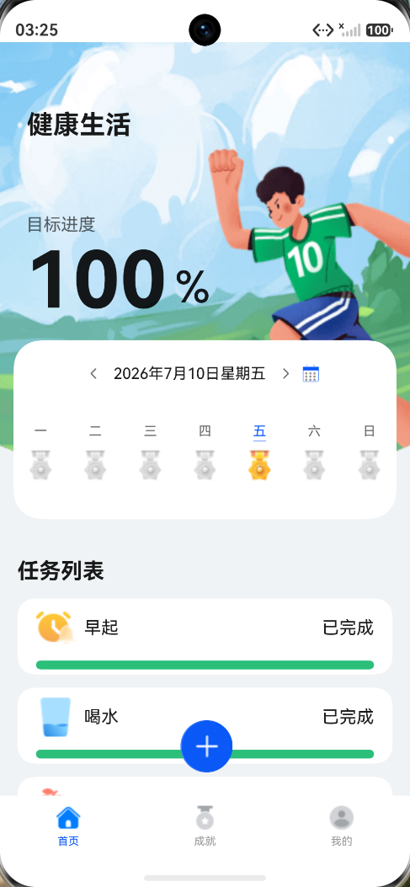
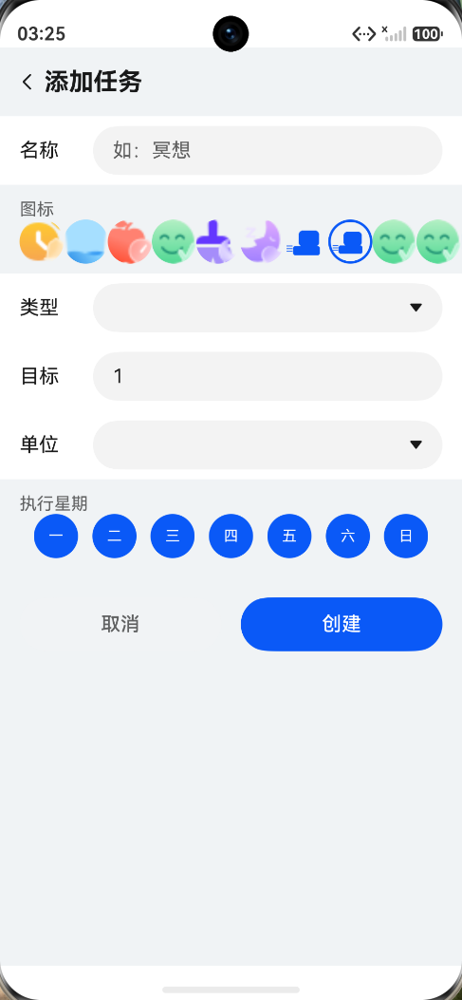
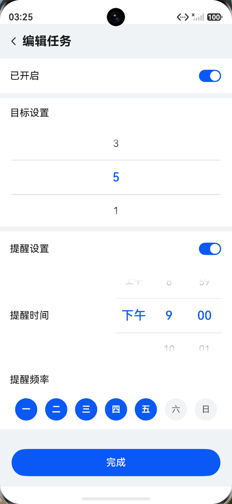
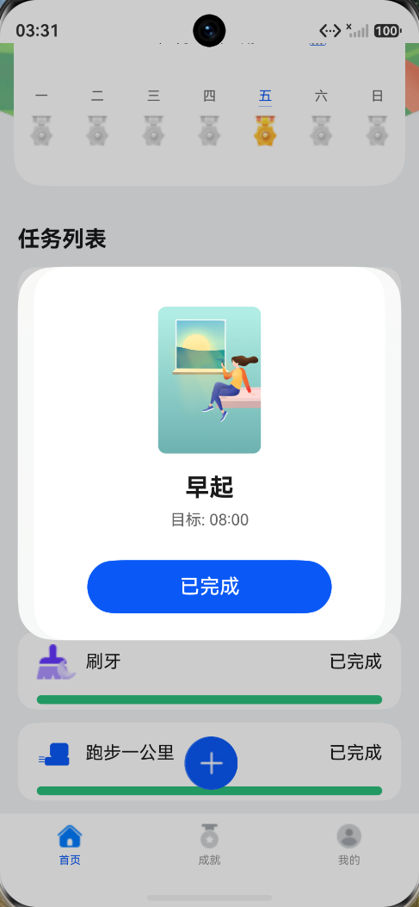
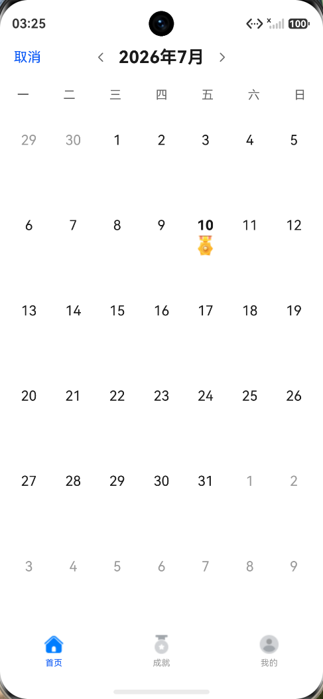
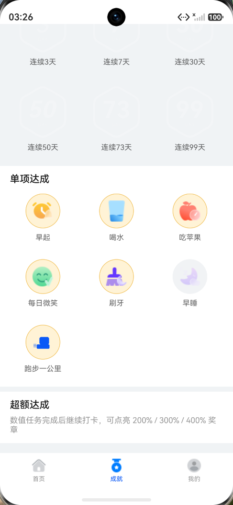

1. 首页与每日打卡中心
首页是用户的主要操作入口，集中展示健康生活标题、当天目标进度、周日历、任务列表和底部导航。 用户可以在这里查看当天任务完成情况，并通过任务卡片进入打卡反馈流程。
- 显示当天总体完成百分比，帮助用户快速判断今日进度。
- 周日历展示日期和完成状态，支持用户按日期回看。
- 任务列表展示早起、喝水、刷牙、跑步等任务的完成状态。
本项目基于 ArkTS 与 ArkUI 开发，围绕健康习惯配置、每日打卡、提醒、成就激励和个人资料管理构建完整应用闭环。 报告内容依据当前 Git 提交、真实设备截图和最近一轮构建/测试结果整理。



本节将项目成果按老师评分时最容易关注的维度压缩展示：功能完成度、技术实现、测试证据和迭代质量。
预设习惯、自定义习惯、每日打卡、日期回顾、成就激励、资料管理均已形成闭环。
页面、组件、ViewModel、领域规则、Repository、提醒服务分层组织，便于扩展和测试。
设备集成测试通过，UI smoke 验证主页面，截图证据覆盖核心功能。
修复任务名、资料输入、自定义任务、提醒同步和打卡弹窗文案等问题。
健康习惯管理应用的核心价值在于降低用户坚持行动的成本。本项目以“配置习惯、每日打卡、查看进度、获得激励”为主线， 设计并实现了一个适合日常使用的 HarmonyOS 应用。
项目采用 HarmonyOS ArkTS/ArkUI 开发，单模块 `entry` 承载页面、组件、领域规则、状态管理、服务和持久化代码。 代码按 UI、viewmodel、domain、services、data 等层次拆分，便于功能扩展和测试。
首页是用户的主要操作入口，集中展示健康生活标题、当天目标进度、周日历、任务列表和底部导航。 用户可以在这里查看当天任务完成情况，并通过任务卡片进入打卡反馈流程。
添加任务页提供预设习惯列表，并显示每个习惯是否已经开启。项目修复了预设任务名称显示为数字 ID 的问题， 让早起、喝水、吃苹果等名称在页面和服务卡片中稳定显示。

自定义习惯功能支持用户创建自己的健康目标。用户可以配置名称、图标、任务类型、目标值、单位和执行星期， 后续进入首页统计和打卡流程。

编辑任务页支持任务启用状态、目标值和提醒设置。跑步任务等数值型任务可以设置目标次数，提醒功能支持开启开关、 选择提醒时间和星期频率。

打卡弹窗展示任务图标、任务名称、目标值和操作按钮。最新修复中，完成后的任务按钮会统一显示“已完成”， 避免数值型任务完成后仍显示“打卡”造成误解。

月视图以整月日历展示完成状态，帮助用户从更长周期观察习惯坚持情况。月历数据会随着打卡、启用、停用和目标修改而更新。

成就页承担长期激励功能，展示连续打卡天数、最高连续天数、本周复盘、连续天数徽章、单项达成和超额达成。 周复盘会总结本周完成率、稳定任务和容易遗漏的任务。
成就详情区域展示不同任务的单项达成状态，以及数值型任务超额完成情况。该设计使用户不仅能看到连续坚持， 也能看到具体习惯上的阶段性成果。

我的页面展示用户头像、昵称、性别年龄、动态等级和个人资料入口。等级不再写死，而是由最高连续天数计算， 体现用户坚持程度。

个人资料页支持头像、昵称、性别、出生日期、身高和体重编辑。项目修复了身高、体重、出生日期无法稳定输入的问题， 改为更直接的内联输入和选择交互。
项目采用“页面展示 - 状态协调 - 领域规则 - 服务/仓储 - 持久化能力”的分层方式组织代码。后续增加新功能时， 可以优先判断它属于页面交互、规则计算、服务能力还是数据读写，从而放入对应层次。
应用使用 ArkUI 声明式 UI 构建页面，首页、添加任务、编辑任务、月视图、成就页、我的页和个人资料页分层组织。
任务完成逻辑由领域规则处理，支持一次性任务、数值型任务和时间型任务，首页根据 DayInfo/DayTask 汇总进度。
任务配置、自定义习惯、用户资料、打卡状态和提醒配置通过仓储层保存，应用重启后仍能恢复主要状态。
提醒服务、成就规则和周复盘规则构成长期激励层，使应用不只是记录工具，也能提供反馈和建议。
项目开发过程中通过 Git 持续迭代。报告不以提交历史作为主线，但关键提交能够证明功能扩展和质量改进过程。
新增跑步任务，扩展数值型任务目标，加入月视图和跑步提醒配置，并补充设备集成测试。
加入月历稳定化、智能目标、补救机制、多维成就、周复盘、自定义习惯和用户等级动态化。
修复 Resource 数字 ID 被当作文本显示的问题，使预设习惯名称在页面和卡片中正确展示。
修复身高、体重、出生日期无法稳定输入的问题，优化个人资料页交互。
修复自定义任务完整编辑、非执行日统计、服务卡片名称和创建校验问题，并新增 UI smoke 脚本。
处理周复盘名称解析、提醒同步、归档卡片、补救成就解锁等边界问题。
修复 VALUE 类型任务完成后仍显示“打卡”的交互问题，完成状态下统一显示“已完成”。
最近一轮验证记录：
devecocli device list
设备在线：127.0.0.1:5555
devecocli build
结果：BUILD SUCCESSFUL
powershell -ExecutionPolicy Bypass -File scripts/run-ohos-test.ps1 -Device 127.0.0.1:5555
结果：Tests run: 18, Failure: 0, Error: 0, Pass: 18
powershell -ExecutionPolicy Bypass -File scripts/run-ui-smoke.ps1 -Device 127.0.0.1:5555 -SkipBuild
结果：UI smoke passed
本报告只把实际执行通过的设备测试写为 18/18。仓库中的本地测试文件、describe/it 声明数量用于说明测试规模， 不等同于本轮全部已执行通过的测试数。
从习惯配置、每日打卡、日期回顾到成就激励，形成了较完整的健康习惯管理流程。
用户可创建自定义习惯，并配置图标、目标、单位和执行星期，使应用不局限于预设任务。
任务完成、连续天数、成就、周复盘等逻辑尽量放入 domain/rules，提升可测试性和可维护性。
通过设备测试、UI smoke、截图验证和多轮 bug 修复，提升应用交互一致性和稳定性。
NewHealthyLife 已完成一个健康习惯管理应用的主要功能闭环：用户可以配置预设或自定义习惯，在首页完成每日打卡， 通过周视图和月视图回顾历史状态，在成就页获得长期反馈，并在个人中心维护资料信息。
项目后续可以继续优化通知权限适配、更多数据图表、云端同步、主题个性化、无障碍适配和更完整的自动化回归测试。 目前版本已经具备较完整的课程项目展示价值，也能体现 HarmonyOS 应用开发中的页面构建、状态管理、持久化、规则设计和测试验证能力。